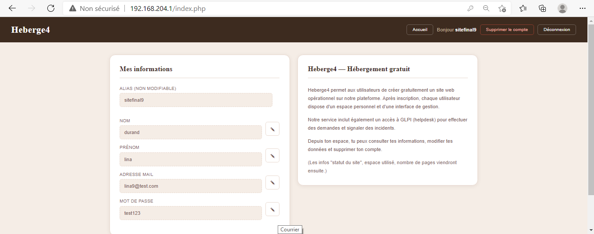
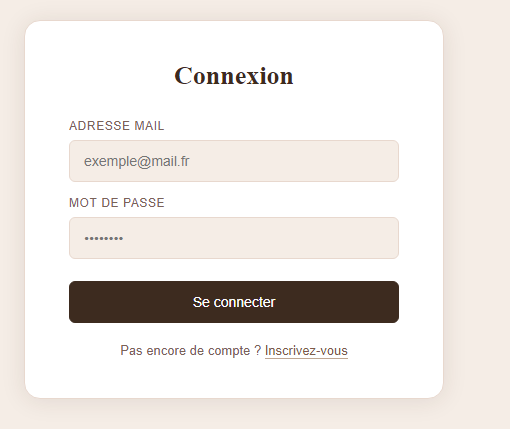
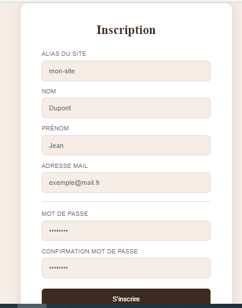

Plateforme d'hébergement web automatisé sous Linux Debian. Chaque utilisateur inscrit obtient automatiquement un compte Linux, un espace web Apache, une base de données MySQL, un enregistrement DNS Bind9 et un accès GLPI.
L'idée du projet
Architecture 3 serveurs
sudo depuis PHPheberge4.lan géré dynamiquementSrvWeb
192.168.204.1
SrvBDD
192.168.204.2
Projet (table users)glpidbSrvGLPI
192.168.204.4
L'utilisateur saisit alias, nom, prénom, email et mot de passe. Données envoyées via PDO à la base Projet (SrvBDD) et simultanément à glpidb (SrvGLPI).
PHP exécute sudo /usr/local/bin/creation_utilisateur.sh $alias $mdp $nom $prenom $mail via exec().
useradd -m -d /home/$ALIAS $ALIAS + echo "$ALIAS:$MDP" | chpasswd
Création /home/$ALIAS/public_html/ avec index.html par défaut. Droits : chown -R $ALIAS:$ALIAS.
CREATE DATABASE $ALIAS + GRANT ALL PRIVILEGES ON $ALIAS.* TO '$ALIAS'@'%'. Base isolée par utilisateur.
Copie template XXXX.conf, remplacement via sed, activation a2ensite + rechargement Apache.
echo "$ALIAS IN CNAME SrvWeb" >> /etc/bind/db.heberge4.lan + service bind9 reload.
Clic "Supprimer le compte" → sudo /usr/local/bin/suppression_utilisateur.sh $alias.
BDD Projet · compte Linux (userdel) · /home/$ALIAS · utilisateur GLPI · a2dissite · conf Apache · rechargement Apache · entrée DNS · rechargement Bind9.
session_unset() + session_destroy() + redirection. Aucune trace ne subsiste.
exec("sudo /usr/local/bin/creation_utilisateur.sh " . escapeshellarg($alias)). Une approche qui couple le web et l'administration système.Projet (192.168.204.2) et glpidb (192.168.204.4)./etc/bind/db.heberge4.lan avec un simple echo Bash.suppression_utilisateur.sh nettoie méthodiquement tout : BDD, Linux, home, GLPI, Apache, DNS. Aucune trace ne subsiste.

